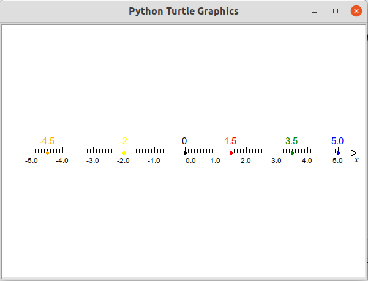

第14讲 在数轴上标记不同的数
内容
第14讲 在数轴上标记不同的数¶
Problem 问题描述¶
执行下面代码单元格中的代码绘制一个数轴。在数轴上找到列表变量nums里每一个数（元素）对应的点在数轴上的位置，然后用另一个列表变量colors里相应位置的字符串表示的颜色来标记每一个点。结果如图所示。
nums = [-4.5, -2.0, 0, 1.5, 3.5, 5.0]
colors = ["orange", "yellow", "black", "red", "green", "blue"]

绘制数轴的代码如下：
[1]:
# 绘制数轴的代码如下：
from turtle import setup, reset, pu, pd, bye, left, right, fd, bk, screensize
from turtle import goto, seth, write, ht, st, home
width, height = 600, 400 # 窗口的宽度和高度（单位为：像素）
setup(width, height, 0, 0)
[2]:
from qianglib
Math Background 数学背景¶
比例的概念
Prerequisites 预备知识¶
1. 理解比例的概念¶
一个人行走的速度不变，那么这个人行走的距离和时间成一定的比例，速度就是这个比例常数。
[3]:
speed = 5 # 速度
time = 10 # 时间
distance = speed * time # 距离
print("when speed is {} m/s, distance is {} meters after {} seconds".
format(speed, distance, time))
when speed is 5 m/s, distance is 50 meters after 10 seconds
一个圆的周长和它的直径成一定的比例，这個比例是一个固定的值，大约为3.14。
[4]:
pi = 3.14 # PI
diameter = 10 # 直径
perimeter = pi * diameter # 周长
print("a circle's perimeter is {} if its diameter is {}".\
format(perimeter, diameter))
a circle's perimeter is 31.400000000000002 if its diameter is 10
在turtle的画布里画数轴，如果选择比例尺为50，也就是数轴上相邻两个整数的距离是50个计算机像素的长度，这个比例尺是人为设置的一个比例。
[5]:
SCALE = 50 # scale
num = 1 # value on the axis
should_move = num * SCALE # pixels need to move
print("when scale is {}, number {} is {} pixels right to the 0 point".\
format(SCALE, num, should_move))
when scale is 50, number 1 is 50 pixels right to the 0 point
2. 创建方法完成标记避免重复代码¶
数一数：本讲绘制数轴的代码一共有多少行？
想一想：如果经常要绘制一个数轴，是不是每一次都要重写一边绘制数轴的代码？ 有没有更加简便的方法？
可以把绘制数轴的方法打包形成一个方法，今后在需要绘制数轴的时候就可以直接调用这个方法
def draw_axis(): # define a method with the name: draw_axis
# 定义一个名字为 draw_axis的方法
#
# write code here to implement what this method will do
# 编写代码来实现这个方法讲将要作的事情
#
return # the end of the method 结束方法
例如我们可以把绘制数轴的工作写在一个方法里。下面的代码完整的定义和实现了draw_axis这个方法：
[6]:
def draw_axis():
width = 600
height = 400
padding = 20
mark_line_length = 10
show_arrow = True
text_offset = 20
arrow_length = 10
arrow_degree = 30
delta_x = 1
max_x = width/2 - padding # x轴最大值
min_x = -1 * max_x
mark_minor_length = 6
mark_minor_interval = 5
reset()
# draw line
pu() # 提起画笔，暂停绘图
home() # Move turtle to the origin – coordinates (0,0) 移动小海龟至初始位置
# and set its heading to its start-orientation 并设置朝向为初始朝向
goto(min_x, 0) # go to the left end of the line 移动海龟到坐标轴直线的最左端
pd() # 落下画笔，准备绘图
goto(max_x, 0) # go to the right end of the line 移动海龟到坐标轴直线的最右段
# draw mark 绘制刻度线
cur_x = min_x
while cur_x <= max_x:
if cur_x % mark_minor_interval == 0:
pu()
goto(cur_x, 0)
pd()
if cur_x % SCALE == 0:
goto(cur_x, mark_line_length) # 绘制刻度线
pu()
text_pos_x = cur_x
if cur_x == 0:
text_pos_x = cur_x + 10
goto(text_pos_x, -text_offset)
pd()
text = str(cur_x//SCALE)
write(text, align="center") # 书写刻度值
elif cur_x - min_x > max_x % SCALE and max_x - cur_x > max_x % SCALE:
goto(cur_x, mark_minor_length)
cur_x += delta_x
pu()
goto(cur_x, -text_offset)
write("x", align="center", font=("Times New Roman", 10, "italic"))
if show_arrow:
# draw arrow
arrow_x, arrow_y = max_x - 10, -5
pu()
goto(max_x, 0)
pd()
goto(arrow_x, arrow_y)
pu()
goto(max_x, 0)
pd()
goto(arrow_x, -arrow_y)
ht()
return
有了这个方法，就可以执行下面的代码来绘制一个数轴
[7]:
reset()
draw_axis()
3. 创建可以接受参数的方法¶
可以考虑让一个方法接受不同的数据来完成类似但不完全相同的功能。回想以下print方法在接受不同的字符串时，会打印出相应不同的字符串内容。
[8]:
print("print is a method")
print("print method receives different strings, and print it out.")
print is a method
print method receives different strings, and print it out.
可以在定义一个方法时由编写这个方法的人规定这个方法能够接受怎样的的数据，以及这些数据如何改变这个方法的输出。例如，我们在标记一个点的时候，点的位置可以是不同的，标记点的大小和颜色也可以是不同的，可以把这些能够改变的数据设为方法接受的参数，借此来达到类似但不完全相同的方法执行结果。
下面的代码给出了如何定义能够接受参数的方法：
def mark(x, size, color, scale): # mark is the name of the method 是方法名
'''
mark a number in an axis
params:
x: the number needed to be marked
size: marker size
color: marker color
scale: the scale used to draw axis (define the position of a number in pixel)
returns: None
'''
#
# write code here to implement what this method will do
# 编写代码来实现这个方法讲将要作的事情
#
return # the end of the method 结束方法
#
在执行这个方法时，需要给这个方法指定各个参数的值，像下面这样：
mark(3, 5, "blue", 50) # 他表示要在数轴上的3的位置，用大小为5，颜色为'blue'的标记点标记。
# 同时scale设定为50，表示数字3在绘图区中央右侧3*50个像素的地方。
4. 用不同的颜色和大小的圆作标记¶
[9]:
from turtle import pen, dot
[10]:
reset()
pen() # get settings for current pen 拿到当前画笔的各种配置
[10]:
{'shown': True,
'pendown': True,
'pencolor': 'black',
'fillcolor': 'black',
'pensize': 1,
'speed': 3,
'resizemode': 'noresize',
'stretchfactor': (1.0, 1.0),
'shearfactor': 0.0,
'outline': 1,
'tilt': 0.0}
[11]:
reset()
pu()
ht()
goto(220, 0)
dot(10, "red")
goto(0, 0)
dot(30, "blue")
5. 练习¶
在turtle画布上线让海龟停留在数轴上的坐标值为1的起始位置，把这个位置用大小为5，颜色为“blue”的点做一个标记；确保画笔处于落下状态记录海龟行走轨迹，让海龟任意行走一段距离至新的位置，对应的x值为3，用大小为2，颜色为”black”的画笔绘制这段线段，并用大小为5，颜色为”red”的点标记这个海龟目前的位置，最后隐藏海龟。
为了标记海龟在数轴上的一个位置，我们需要知道哪些信息？需要执行哪些步骤？
答案：我们需要事先知道这个位置代表的数字是多少以及用多大和什么颜色的点来标记这个位置。因为不知道先前海龟的画笔是提起还是落下，我们需要依次执行如下的步骤： 1. 第一步时使用pu()方法将画笔提起； 2. 第二步是将海龟移动到要求标记的位置； 3. 第三步是使用pd()落下画笔； 4. 第四步是使用dot()方法在新的位置上作标记，标记的时候事先选好标记点的大小和颜色。
[12]:
reset()
draw_axis()
num = 1
pu()
goto(SCALE*num, 0)
pd()
dot(5, "blue")
pd()
num = 3
pen(pensize=5, pencolor="black")
goto(SCALE*num, 0)
dot(5, "red")
ht()
Solution 编程求解¶
创建下面的方法完成在指定位置标记一个点的工作
[13]:
from turtle import dot, pen
def mark(x, size, color, scale): # mark是方法名，
# x, size, color, scale在方法内部使用的可以变化的参数
pos = x * scale # 计算要移动到的新位置
pu() # 提起画笔
goto(pos, 0) # 移动到新位置
pd() # 落下画笔
dot(size, color) # 用给定的size和color标记
pu() # 提起画笔
goto(pos, 10) # 移动到当前位置上方10个像素
pd() # 再次落下画笔
pen(pencolor=color, pensize="5") # 设置画笔的颜色和线的粗细
write(str(x), align="center", font=("Arial", 10, "normal")) # 当前位置书写数字
[14]:
# 执行先前定义和实现 draw_axis 方法所在的单元格
[15]:
nums = [-4.5, -2, 0, 1.5, 3.5, 5.0]
colors = ["orange", "yellow", "black", "red", "green", "blue"]
reset() # 重置画布
draw_axis() # 调用执行绘制数轴的方法
i, n_dot = 0, len(nums)
while i < n_dot:
mark(nums[i], 5, colors[i], SCALE) # 调用执行新创建的方法
i += 1
Summary 知识点小结¶
根据约定，通常用大写字母作为名称的变量，其值一般不变化。例如本讲中的SCALE
学习
pen()和dot()方法理解掌握创建一个方法的格式和意义，开始学习创建自己的方法
计算机小知识¶
暂缺
Assignments 作业¶
Mass is the amount of “matter” in an object (though “matter” may be difficult to define), whereas weight is the force exerted on an object by gravity. In other words, an object with a mass of 1.0 kilogram weighs approximately 9.81 newtons on the surface of the Earth, which is its mass multiplied by the gravitational field strength. The object’s weight is less on Mars, where gravity is weaker, and more on Saturn, and very small in space when far from any significant source of gravity, but it always has the same mass.
质量是物体中“物质”的数量（尽管“物质”可能难以定义），而重量是地球吸引物体的力量，也就是重力作用在物体上的力，。 换句话说，一个质量为 1.0 千克的物体在地球表面上的重量约为 9.81 牛顿，即其质量乘以引力场强度。该物体的重量在火星上较小，那里的重力较弱，而在土星上则较大，并且在远离任何重要重力源的空间中非常小，但它的质量始终相同。
Answer the following question step by step: 依次回答下面的问题：
Measure what the mass yourself is on a scales at home with the help of your Mom or Dad, observe the reading of the scale and the unit. 在爸爸妈妈的帮助下用家里的秤称一称自己，看看上面的读数是多少，单位是什么。
Then write a program to calculate how many forces you are attracted by Earth. 编程计算你受到的球的吸引力有多少牛顿。
[16]:
# TODO: write your codes here
Write a method to compare two numbers and tell which number is larger. Requirements: 创建一个方法用来判断给定的两个数哪一个大。要求：
the method name is
larger_num, 方法名为larger_num;the method accepts two parameters, the names of which is up to you. 方法接受两个整数型参数，参数名可自由设定
within the method, compare the values of the two parameters, output the larger one with the format of “XX is larger.”. If two numbers are euqal output: “Two numbers are equal.” 在方法内部，比较这两个数，打印输出较大的那个数，如果两个数相等则打印输出“两个数相等”。
Run and test your methods 5 time with the following values of parameters. Observe if your method’s output is the same as the output provided below. 创建好这个方法后，依次用下面的两组数来测试你创建的方法，观察输出的结果是否与预期的结果相同：
num1
num2
Output
12
12
Two numbers are equal.
18
14
18 is larger.
0
4
4 is larger.
1091
0
1091 is larger.
0
0
Two numbers are equal.
[17]:
# TODO: implement your method here
def larger_num(num1, num2):
# TODO: add more codes here
return
[18]:
larger_num(12, 12)
larger_num(18, 14)
larger_num(0, 4)
larger_num(1091, 0)
larger_num(0, 0)
Write method to calculate and print out the sum of two integers that you input from the keyboard. Requirements: 创建一个方法来计算两个整数的和并输出结果。要求:
方法名为
get_sum，该方法不接受任何参数。within the method, write codes to receive two number strings from keyboard 你的代码能够从键盘接受两个数字字符串
within the method, convert these two strings to two Integer numbers, assign them to two variables. The names of the two Integer variables can be decided as you like 将这两个字符串转化为两个整数型数字并将其赋值给两个变量，变量名可以根据你自己的喜好来设定
within the method, calculate the sum of the two Integer variables, assign the result to a new Variable named
result计算这两个整型变量的和，并将结果赋值给一个叫result的变量within the method, print out the type of the
resultvariable 打印输出变量result的数据类型within the method, display the result on screen with a readable sentence. 打印输出一个通俗易懂的句子来显示你计算得到的结果
Run and test 5 times your method. Each time when inputs from keyboard are required, provide the following values for the two numbers. Observe whether the output of the method is the same as the sum for each test.
运行5次你创建的方法，分别使用下表中的num1,num2的值作为键盘输入运行并测试你的代码共计5次，观察结果是否与对应的Sum一样。
Your should run the method on all test data; that being said, you may not change the codes between each run.
你应该用同样的代码来运行所有的测试数据，也就是说，你不应该在两次测试间隙修改你的代码
num1
num2
Output
12
12
The sum is 24
18
14
The sum is 32
0
4
The sum is 4
1091
0
The sum is 1091
0
0
The sum is 0
[19]:
# TODO: implement your method here
[20]:
# TODO: execute your methods here 5 times with values of parameters provided.
Write a method to calculate and print out the perimeter and area of a rectagle with the length and width provided by keyboard. 创建一个方法来计算一个长方形的周长和面积，确定这个长方形的长和宽从键盘输入得到。Requirements: 要求:
方法名为
perimeter_and_area, 该方法接受两个整数型参数，试图代表矩形的两个边长。within the method, verify whether two parameters provided can form a rectangle or not. If not, print out “Not a rectangle”; otherwise, continue the following steps
within the method, calculate the perimiter and the area of this rectangle, assign the result to
perimeterandareavariable 计算这个长方形的周长和面积，并将结果分别赋值给名为perimeter和area的变量within the method, print out the value of the
perimeter和areavariables 打印输出变量perimeter和area的结果
Run and test 5 times your method with the following inputs (length, width) for each test. Observe whether the results are equal to the Perimeter and Area for each test 分别使用下表中的length和width的值作为键盘输入运行并测试你的代码共计5次，观察结果是否与对应的Perimiter和Area值一样
Your should run the method on all test data. 你应该用同样的代码来运行所有的测试数据。
length
width
output
12
12
perimeter is: 48, area is: 144
18
14
perimeter is: 48, area is: 144
0
4
Not a rectangle
1091
0
Not a rectangle
0
0
Not a rectangle
[21]:
# TODO: implement your method here
[22]:
# TODO: execute your methods here 5 times with values of parameters provided.